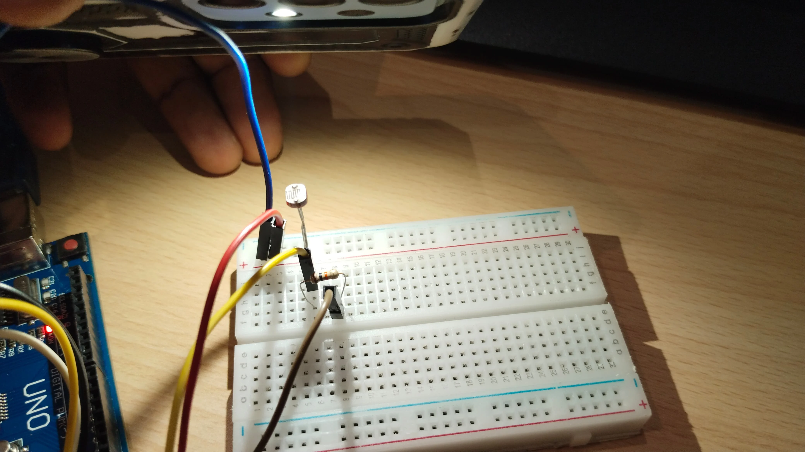
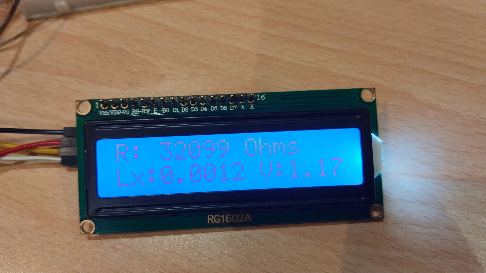
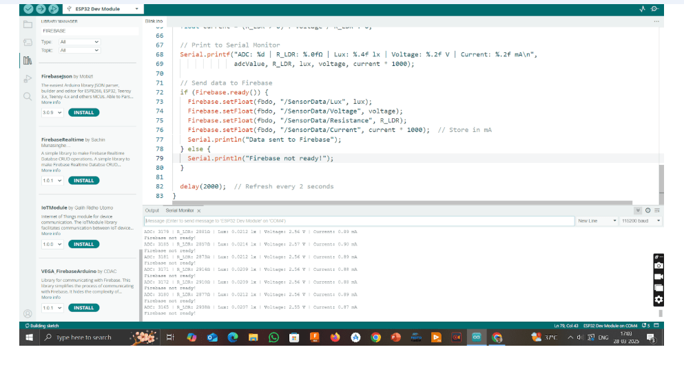

Understanding the Sensor Behind the Thing - LDR Sensor
1. Introduction
The objective of this task was to understand the working of an analog sensor, analyze its datasheet, collect real-time data, and visualize the results. The Light Dependent Resistor (LDR) was chosen as the sensor.
2. Sensor Selection
- Diameter: 5mm
- No. of Pins: 2
- Type: PCB Through Hole
- Max Operating Temperature: +800°C (Approx.)
- Dark resistance: 1-20MΩ
3. Working Principle
An LDR changes its resistance based on light intensity using the photoelectric effect. More light → less resistance. Less light → higher resistance.
Input Voltage & Current
Operated at 5V. Current depends on the resistance of the LDR and the value of the series resistor used.
4. Raw Data Using Oscilloscope
Components used:
- LDR
- 10kΩ Resistor (Voltage Divider)
- 5V Power Supply
- Oscilloscope (MSO/DSO)
Conditions observed:
- High Light: Low Resistance, High Voltage
- Medium Light: Moderate Resistance, Intermediate Voltage
- Low Light: High Resistance, Low Voltage
5. Tinkercad Simulation
Used:
- 10kΩ Resistor
- LDR
- Arduino Uno
- LCD (LiquidCrystal_I2C)
Code implemented ADC reading, voltage calculation, resistance conversion, lux estimation, current calculation and displayed results on LCD & serial monitor.
Conditions observed:
- High Light
- Medium Light
- Low Light
#include
#include
LiquidCrystal_I2C lcd(0x20, 16, 2); // Update I2C address if needed
int LDR_PIN = A0; // LDR connected to A0
const float R_fixed = 10000.0; // 10kΩ resistor in voltage divider
// Adjusted Calibration Constants (Use Best-Fit Values from Python)
const float A = 300.0; // Replace with your calculated A
const float B = 1.2; // Replace with your calculated B
// Function to get stable readings
int getSmoothReading(int pin, int samples = 10) {
long sum = 0;
for (int i = 0; i < samples; i++) {
sum += analogRead(pin);
delay(5); // Reduce noise
}
return sum / samples;
}
void setup() {
Serial.begin(9600);
lcd.init();
lcd.backlight();
lcd.setCursor(0, 0);
lcd.print("Light Intensity:");
}
void loop() {
int adcValue = getSmoothReading(LDR_PIN);
float voltage = (adcValue / 1023.0) * 5.0; // Convert ADC to voltage
// Calculate LDR resistance
float R_LDR = R_fixed * (1023.0 / adcValue - 1.0);
// Convert resistance to Lux using updated formula
float lux = A * pow(R_LDR, -B);
// Calculate current (I = V / R_LDR)
float current = (R_LDR > 0) ? voltage / R_LDR : 0; // Avoid division by zero
// Display on LCD (Two Lines)
lcd.setCursor(0, 1);
lcd.print("Lx:");
lcd.print(lux, 4); // Show Lux with 4 decimal places
lcd.print(" V:");
lcd.print(voltage, 2);
delay(1000);
lcd.clear();
lcd.setCursor(0, 0);
lcd.print("R: ");
lcd.print(R_LDR, 0);
lcd.print("Ω");
lcd.setCursor(0, 1);
lcd.print("I: ");
lcd.print(current * 1000, 2); // Convert A to mA for better readability
lcd.print(" mA");
// Print to Serial Monitor
Serial.print("ADC: ");
Serial.print(adcValue);
Serial.print(" | R_LDR: ");
Serial.print(R_LDR, 0);
Serial.print("Ω | Lux: ");
Serial.print(lux, 4); // Show Lux with 4 decimal places
Serial.print(" lx | Voltage: ");
Serial.print(voltage, 2);
Serial.print(" V | Current: ");
Serial.print(current * 1000, 2);
Serial.println(" mA");
delay(1000); // Refresh Rate
}
6. Real Hardware Implementation
Arduino Integration
Used:
- 10kΩ Resistor
- LDR
- Arduino Uno
- LCD (LiquidCrystal_I2C)
Conditions observed:
- High Light
- Medium Light
- Low Light


Same code and concept as Tinkercad, implemented using real components. Displayed output both on LCD and Serial Monitor.
#include
#include
LiquidCrystal_I2C lcd(0x27, 16, 2); // Update I2C address if needed
int LDR_PIN = A0; // LDR connected to A0
const float R_fixed = 10000.0; // 10kΩ resistor in voltage divider
// Adjusted Calibration Constants (Use Best-Fit Values from Python)
const float A = 300.0; // Replace with your calculated A
const float B = 1.2; // Replace with your calculated B
// Function to get stable readings
int getSmoothReading(int pin, int samples = 10) {
long sum = 0;
for (int i = 0; i < samples; i++) {
sum += analogRead(pin);
delay(5); // Reduce noise
}
return sum / samples;
}
void setup() {
Serial.begin(9600);
lcd.init();
lcd.backlight();
lcd.setCursor(0, 0);
lcd.print("Light Intensity:");
}
void loop() {
int adcValue = getSmoothReading(LDR_PIN);
float voltage = (adcValue / 1023.0) * 5.0; // Convert ADC to voltage
// Calculate LDR resistance
float R_LDR = R_fixed * (1023.0 / adcValue - 1.0);
// Convert resistance to Lux using updated formula
float lux = A * pow(R_LDR, -B);
// Calculate current (I = V / R_LDR)
float current = (R_LDR > 0) ? voltage / R_LDR : 0; // Avoid division by zero
// Display on LCD (Two Lines)
lcd.setCursor(0, 1);
lcd.print("Lx:");
lcd.print(lux, 4); // Show Lux with 4 decimal places
lcd.print(" V:");
lcd.print(voltage, 2);
delay(1000);
lcd.clear();
lcd.setCursor(0, 0);
lcd.print("R: ");
lcd.print(R_LDR, 0);
lcd.print(" Ohms");
lcd.setCursor(0, 1);
lcd.print("I: ");
lcd.print(current * 1000, 2); // Convert A to mA for better readability
lcd.print(" mA");
// Print to Serial Monitor
Serial.print("ADC: ");
Serial.print(adcValue);
Serial.print(" | R_LDR: ");
Serial.print(R_LDR, 0);
Serial.print("Ω | Lux: ");
Serial.print(lux, 4); // Show Lux with 4 decimal places
Serial.print(" lx | Voltage: ");
Serial.print(voltage, 2);
Serial.print(" V | Current: ");
Serial.print(current * 1000, 2);
Serial.println(" mA");
delay(1000); // Refresh Rate
}
ESP32 Integration
Arduino lacks built-in WiFi for cloud logging. Switched to ESP32 WROOM to enable Firebase integration. Faced some limitations with NodeMCU ESP8266 such as ADC resolution and connectivity.
9. ESP32 Code Snippet (Firebase)

#include
#include
#include
#include "addons/TokenHelper.h"
#include "addons/RTDBHelper.h"
#define WIFI_SSID "YourWiFi"
#define WIFI_PASSWORD "YourPassword"
#define API_KEY "YourFirebaseAPIKey"
#define DATABASE_URL "YourDatabaseURL"
FirebaseData fbdo;
FirebaseAuth auth;
FirebaseConfig config;
bool signupOK = false;
#define LDR_PIN 34
#define FIXED_RESISTOR 10000.0
const float A = 300.0;
const float B = 1.2;
unsigned long sendDataPrevMillis = 0;
void setup() {
Serial.begin(115200);
WiFi.begin(WIFI_SSID, WIFI_PASSWORD);
while (WiFi.status() != WL_CONNECTED) { delay(300); }
config.api_key = API_KEY;
config.database_url = DATABASE_URL;
Firebase.begin(&config, &auth);
Firebase.reconnectWiFi(true);
}
void loop() {
if (Firebase.ready() && signupOK && (millis() - sendDataPrevMillis > 1000)) {
sendDataPrevMillis = millis();
int adcValue = analogRead(LDR_PIN);
float voltage = (adcValue / 4095.0) * 3.3;
float R_LDR = (FIXED_RESISTOR * (3.3 / voltage - 1.0));
float lux = A * pow(R_LDR, -B);
Firebase.RTDB.setFloat(&fbdo, "LDR_Sensor/LUX", lux);
}
}
10. Conclusion
This project enabled complete understanding of the LDR sensor, from analog behavior to real-time monitoring and cloud data logging using ESP32. It showcases practical implementation of IoT-based sensor systems and calibration techniques.